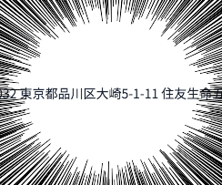

## 株式会社フォトシンス
五反田IT企業LT戦記
株式会社フォトシンス CTO 本間和弘
## 自己紹介
### 自己紹介 - ・本間和弘 / @kazuph - ・元株式会社GaiaX社員(新卒)→3年半後に起業 - ・株式会社フォトシンス, 創業メンバー, CTO - ・本業…C, Obj-C, Swift, Perl, Ruby, Java - ・趣味…Node, Golang, Elixir
### YAPC::Asia 2013, 2015で登壇 PerlとVimとIoTが大好きです♡
### TechCrunch Tokyo 2015
CTO Night 登壇
## 普通の会社紹介
## 株式会社フォトシンス - ◯創業1年、調達総額4.7億円のIoTベンチャー - ◯NEDO採択、多数の特許出願 - ◯ハードもソフトも内製できる若手エンジニア集団 - ◯メインプロダクト「Akerun」の開発・提供
### スマートロックロボットAkerun
### ここで衝撃の事実が 
### ここで衝撃の事実が - ◯ビル名…住友生命五反田ビル - ◯最寄り駅…五反田駅 どう見てもの五反田IT企業
### ここで衝撃の事実が 
### 住所が大崎！！ 
### m(_ _)m 住所は大崎ですが、
仲良くしてやってください
## 技術から見た会社紹介
## 弊社の技術レイヤー - メカ - エレキ - ファーム - スマフォアプリ - API・Web - AWS
### [メカ](https://photos.google.com/share/AF1QipM84318Ni7S3VRBEpXxAAbKOxu8W5bdwaUAgruGoV-OpZTXCaMPPgazP8tk71NeKg?key=TllTYzVYTVBleGpMSDUzMEM0STBOYWFqd01TNEVn) 
### メカ 
### メカ 
### メカ 
### 製造がやばい 
### エレキ 
### エレキ 
### エレキ 
### ファーム 
### ファーム 
### スマフォアプリ - CoreLocation - CoreBluetooth ごりごり
### API・Web - Ruby on Rails - MySQL - Mithril.js
### AWS - EC2 - RDS - S3 - SES
### とにかくすごく広いレイヤーで
戦ってます｡ﾟ(ﾟ´Д｀ﾟ)ﾟ｡ - [Photosynth思い出写真集](https://photos.google.com/share/AF1QipNu2aPxmAQWVrNVUWltr6UqYrga4h5fa4iStd9R4Ml1_nENW9RPHUUR6p0V1FxpKg?key=bUtwZVhuNkRPUUZMOFcyYnk1alR5dXc2Sk5pY2JR)
### そういえば
### 謎のボタン 
## ご清聴ありがとう
ございました！